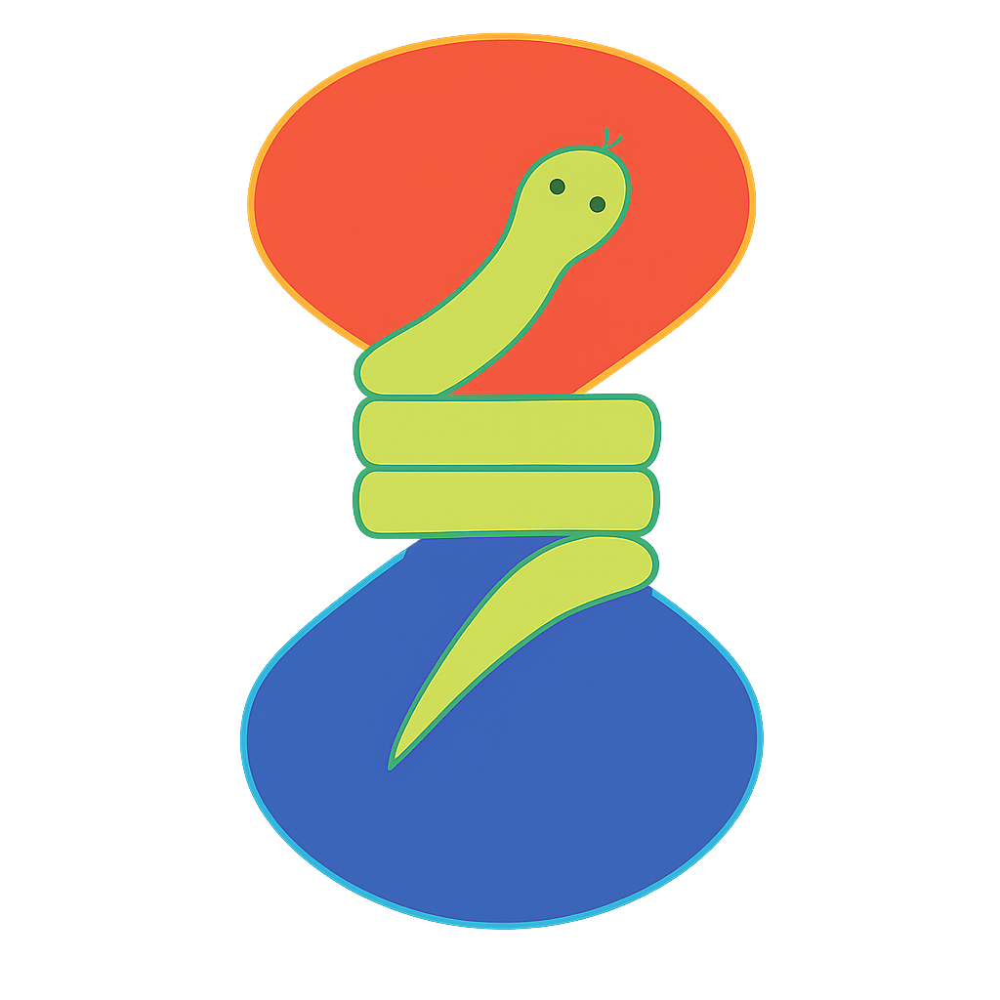
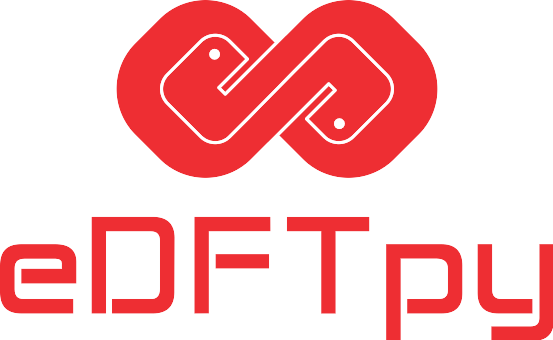
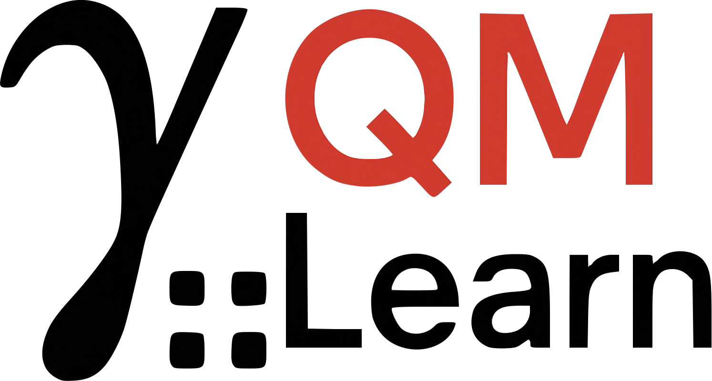

Open Source
Our software
Q-MS teams build software for first-principles multiscale modeling based on continuum embedding, density embedding, and data-driven many-body methods.

DFTpy
Python code for orbital-free DFT with efficient parallelization for million-atom systems.
Learn more →Environ
Library to handle environment effects via continuum embedding models.
Learn more →
eDFTpy
Embedding simulations with any KS solver, supporting ab-initio dynamics (ASE) and OF-DFT subsystems (DFTpy).
Learn more →QEpy
Quantum ESPRESSO turned into a Python DFT engine for nonstandard workflows.
Learn more →MBX
Energy and force calculator for data-driven many-body simulations.
Learn more →
QMLearn
Learning one-body reduced density matrices in the AO basis.
Learn more →